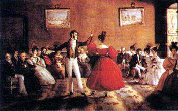
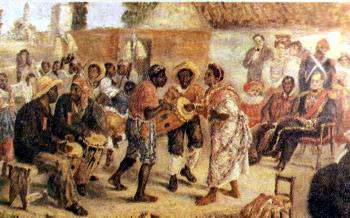
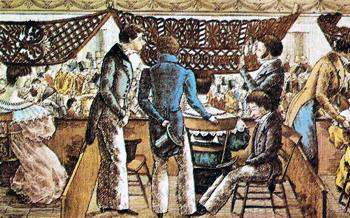
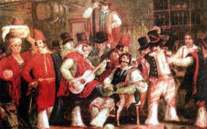

Las imágenes son recursos valiosos para los historiadores. El análisis de estos materiales -más allá de su
valor para la historia del arte- puede servir para conocer cómo la gente se veía y deseaba ser vista, cómo
eran sus viviendas, su vestimenta o sus lugares de trabajo, cómo se mostraban en la cotidianeidad o en la
vida oficial. Puede servir también para descubrir, en cada época, qué personas, situaciones y acontecimientos
se consideraban dignos de ser reproducidos y, de esta manera, puestos a salvo del olvido. Las imágenes que
les presentamos a continuación muestran cómo se divertían los distintos sectores de la sociedad porteña
en la época de Rosas.

Minuet. Acuarela de Carlos E. Pellegrini, 1831. Pellegrini, un ingeniero saboyano, fue contratado por
Rivadavia para realizar trabajos hidráulicos en el país. Cuando llegó al Río de la Plata, en 1828, la
situación política había cambiado y se quedó sin trabajo. Comenzó entonces a retratar, con gran éxito,
a los personajes de la sociedad porteña. También pintó y dibujó el paisaje de la ciudad de Buenos Aires
y de su campaña, y escenas de la vida cotidiana de sus habitantes

Candombe. Óleo de Martín L. Boneo. Boneo era un pintor argentino, que nació en 1829, año en que Rosas
comenzaba su primer período de gobierno. Sus trabajos más importantes son, por lo tanto, posteriores
a la caída de Rosas. Entre ellos, es muy conocido su Candombe, en homenaje al Restaurador, pintura
que es producto de los recuerdos de su infancia. Boneo se destacó, fundamentalmente, por su labor
docente al frente de la Escuela de Dibujo y Pintura, fundada en 1873.

Peinetones en el teatro. Litografía de César H. Bacle, 1834. Bacle era un ginebrino que instaló un taller
litográfico en Buenos Aires. Los primeros trabajos fueron retratos e imágenes de carácter político. Luego
de 1830, se dedicó también a publicar litografías sobre las costumbres del país. De éstas, las más conocidas
integran el álbum Trages y costumbres de la Provincia de Buenos-Aires (sic). En una de sus series, ridiculiza
el uso de grandes peinetones, moda impuesta por su fabricante, Mateo Masculino

Payada en la pulpería. Óleo de Carlos Morel. Morel fue uno de los primeros pintores argentinos egresados de la
escuela de dibujo de la Universidad de Buenos Aires. Hasta ese momento, los trabajos más importantes eran realizados
por artistas extranjeros que se radicaban en el país, Morel se interesaba por reflejar escenas populares y
personajes característicos de la época de Rosas -vendedores ambulantes, gauchos, indios, soldados federales,
etcétera-
Si te interesa saber mas sobre la pintura y sobretodo conocer algunos de los pintores mas famosos y importantes de la historia de la pintura
. Da clic en uno de los 4 pintores que te mostramos a continuacion.....